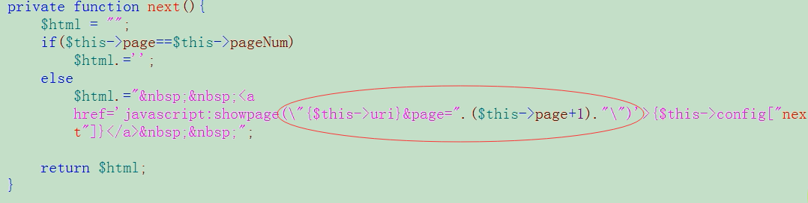

Ajax简介
 CoMath
CoMath
Ajax：Asynchronous javascript and xml （异步javascript和xml）.AJax 不是新的编程语言，而是一种使用现有标准的新方法.
创建ajax对象：
-
主流浏览器方式： 火狐、Google、苹果Safari、opera包括IE7以上版本的浏览器 var xhr = new XMLHTTPRequest();
-
IE(6/7/8 )方式： var xhr = new ActiveObject(“Microsoft.XMLHTTP”); //最原始方式 var xhr = new ActiveObject(“Msxml2.XMLHTTP”); var xhr = new ActiveObject(“Msxml2.XMLHTTP.3.0”); var xhr = new ActiveObject(“Msxml2.XMLHTTP.5.0”); var xhr = new ActiveObject(“Msxml2.XMLHTTP.6.0”); //IE维护的最高版本
-
发起对服务器的请求
<script type="">
function f() {
//①创建ajax对象
var xhr = new XMLHttpRequest();
//②创建新的http请求（并设置请求地址）
//open(请求方式get/post，url请求地址)
xhr.open(‘get’,’./xxx.php’);
//③发送请求
//send(get---null/post---给服务器传递的信息)
xhr.send(null);
}
</script>
- 接收服务器端返回的信息
ajax对象的成员
- 属性：
-
responseText：以字符串形式接收服务器端返回的信息.
-
readyState：
- 刚创建ajax对象.
- 已经调用open方法.
- 已经调用send方法.
- 已经返回部分数据.
- 请求完成，数据返回完整.
-
onreadstatechange：事件，当ajax状态readState发生变化的时候处触发执行，为了获得较多的状态，最好在创建好阿加西对象后就设置.最多可以感知1/2/3/4 四种状态.
-
- 方法：
- open(); 创建新的http请求.
- send(); 把请+ 求发送给服务器端.
<script type="">
function f() {
//①创建ajax对象
var xhr = new XMLHttpRequest();
//④ 给ajax设置事件
xhr.onreadystatechange = function(){
//console.log(xhr.readState);
if(xhr.readyState==4){
//console.log(xhr.responseText);
//把服务端返回的信息显示在页面上
document.getElementById(‘request’).innerHTML = xhr.responseText;
}
}
//②创建新的http请求（并设置请求地址）
//open(请求方式get/post，url请求地址)
xhr.open(‘get’,’./xxx.php’);
//③发送请求
//send(get---null/post---给服务器传递的信息)
xhr.send(null);
}
</script>
-
get请求注意事项：
① 在url地址后面以请求字符串（传递的get参数信息）形式传递数据.
② 对中文、=、&等特殊符号处理.
对特殊信息的处理：
在浏览器里通过get参数传递一些特殊符号信息会被误解混淆，例如：=、&等.为了避免特殊符号被误解产生歧义，需要对其进行编码处理：在javascript里面可以通过encodeURLComponent()对特殊符号等信息进行编码;编码后的信息可以被正常接收使用，无需解码.
-
post请求的注意事项：
① 给服务器传递数据需要调用send(请求字符串数据)方法; ② 调用方法sentRequestHeader()把传递的数据组织为xml格式（模仿form表单传递数据）; ③ 传递的中文信息无需编码，特殊符号 &、=等仍需编码; ④ 该房是请求的同时也可以传递get参数信息，同样适用$_GRT 接受信息.
-
同步、异步
ajax对象.open(方式get/post，url地址，[异步true]同步false);
- 异步：同一时间点允许执行多个线程.
- 同步：同一时间点只允许执行一个线程.
-
无刷新分页效果：
ajax刷新无分页效果是对传统分页效果的封装;先将传统分页效果制作出来,在javascript代码块中定义函数，再创建ajax对象，创建事件，打开open，send，其中在创建事件的时候将加载后的信息显示到指定位置，为了实现分页跳转，则需要将url地址传给函数作为参数，其原因主要是因为分页效果其实就是实现的超链接，而ajax实现无刷新分页效果则是将超链接替换成定义的函数. 
-
ajax对xml信息的接收和处理
ajax负责请求xml和接收xml信息，都没负责处理xml信息;
dom：javascript里，dom是负责javascript与html(xml)之间沟通的桥梁.
-
ajax对缓存的处理
① 给请求的地址设置随机数，即：保证每次请求的地址不一样；
url?Math.random();② 给动态程序设置header头信息，禁止浏览器对其缓存（PHP中这样设置）.
header(“Cache-Control:no-cache”)
header(“Pragma: :no-cache”)
header(“Expires:-1”)
Xin态好先生
机会是给有准备的人的.